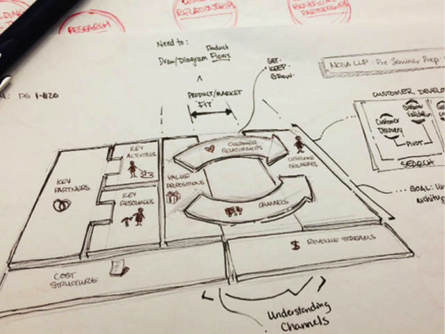
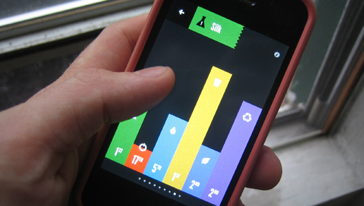

Sustainability Bucket List
Natural Leadership July 9, 20014
Natural Leadership July 9, 20014
Eco Careers Feb 26, 2014

Innovation & Entrepreneurship Nov 13, 2013
Biomimicry Feb 20, 2014

Green Graphic & Packaging Design Feb 10, 2014

Innovation & Entrepreneurship Jan 30, 2014

About the MA Program Jan 15, 2014
About the MA Program Dec 19, 2013
Natural Leadership Oct 20, 2013

Innovation & Entrepreneurship Aug 15, 2013
